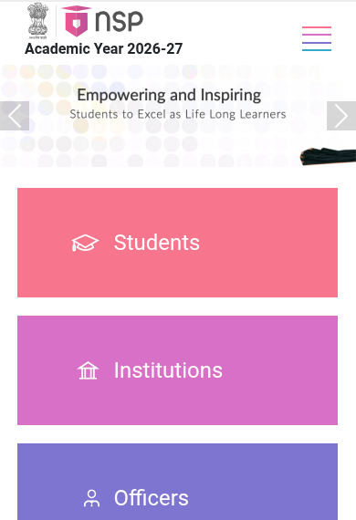
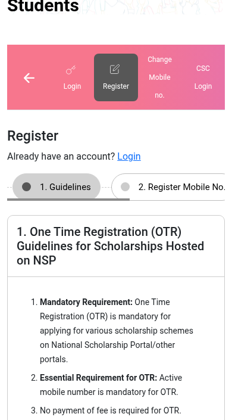
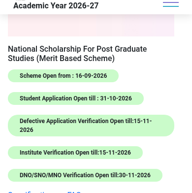

National Scholarship for PG Studies: Rs 15,000 a month for 2 years, apply on NSP by 31 October
The National Scholarship for Post Graduate Studies (NSPGS) pays Rs 15,000 a month for 10 months a year - Rs 1.5 lakh a year - for the full two years of your PG degree. It is a UGC merit scholarship for students in the first year of a regular, full-time PG course, there is no income limit, and 10,000 students are selected across India every year. Applications for 2026-27 are open on the National Scholarship Portal and close on 31 October 2026.
@@COVER@@Who can apply
- Students admitted to the first year of a PG degree through regular/full-time mode (first PG degree only)
- Below 30 years of age on the date of admission to the first semester/year of the PG programme
- UG degree from an institution recognised under Section 2(f) or Section 3 of the UGC Act, 1956, or authorised to award degrees
- PG institution must be a Section 2(f) university/college with valid NAAC accreditation, a deemed university (Section 3), a fully Central/State-funded institution, or an Institution of National Importance
- Integrated programme students can apply for the PG component only
- No income limit
What you get
- Rs 15,000 a month for 10 months a year - Rs 1.5 lakh a year
- For both years of a two-year PG degree - up to Rs 3 lakh in total
- 10,000 scholarships a year, split 50-50 between Arts/Humanities/Social Sciences/Law/Management and Science/Engineering/Medical/Technical/Agriculture/Forestry streams
- 30% of slots reserved for women candidates, single girl children first
- Paid by Direct Benefit Transfer to your own Aadhaar-seeded bank account
How to apply: step by step

- Keep documents ready: UG degree certificate and mark lists, PG admission proof from your institution, Aadhaar, and your own Aadhaar-linked bank account details (account number and IFSC).
- Complete One Time Registration (OTR) on NSP: Students, then Register. OTR needs an active mobile number and Aadhaar-based eKYC, and it is free.

- Log in on NSP with your OTR number and password, fill in your personal, academic and bank details, and choose "National Scholarship for Post Graduate Studies" from the scheme list.

- Upload the required documents and submit. Note your application ID.
- Submit originals/documents to your college for verification. Your institution verifies on NSP by 15 November 2026; defective applications can be corrected and re-verified by the same date; nodal verification runs till 30 November 2026.
- Results are usually declared in November-December on NSP and the UGC website.
Watch: apply step by step
- English: How to Generate OTR Number on NSP OTR App - Step by Step Guide - Buddy4Study, 2025. Walks through the mandatory OTR registration that comes before the NSPGS application.
- Malayalam: we could not find a reliable, current Malayalam video covering the NSPGS 2026-27 application. The official Kerala notification in Malayalam is linked below.
These videos are by independent education channels, not the government - always cross-check details on the official pages linked below. Dates on the NSP scheme list (checked 19 October 2026): student applications close 31 October 2026; defective application verification and institute verification close 15 November 2026; nodal verification closes 30 November 2026. Amount, slots and rules are from the UGC scheme guidelines and FAQ published on NSP. Kerala students can also contact the state scholarship office at 9446096580 or 9188900228, or nsppgstudies@gmail.com.
Sources: NSP scheme list, UGC scheme guidelines (PDF), official FAQ (PDF), UGC scheme page, Kerala DCE notification (Malayalam PDF). Checked 19 October 2026. This is an AiCoN explainer, not a government publication.